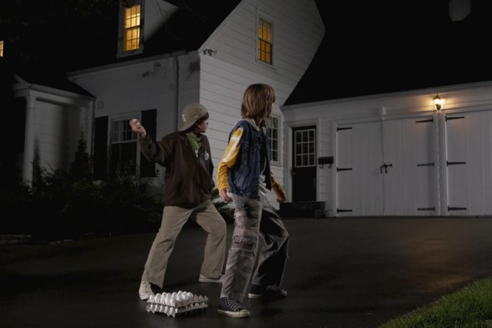
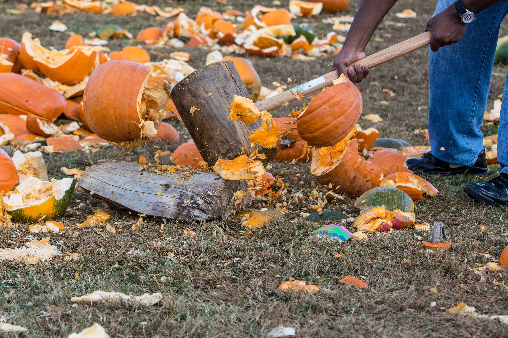
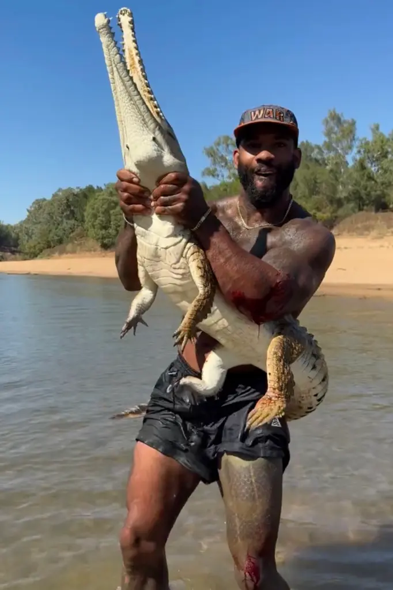

Local Community Hosts Mass Egging of House That Set Up Christmas Lights 2 Weeks Before Halloween
A family new to Villagetown woke up to the unpleasant sight and smell of their house being bombarded by eggs and rolls of toilet paper. The family had decided to put up their Christmas decorations nearly 2 weeks before Halloween. Apparently the folks of Villagetown could handle ignoring Thanksgiving, but not Halloween, their supposed favorite holiday.

After nearly two hours of assault in which even the local police force joined in, the mob proceeded to cheer and disperse. The family lawyer's hair is visibly turning grey trying to sort out how to put together the vandalism case. But regardless of what side you take in this war, one thing is clear... In this economy? That was an egregious waste of eggs.
Crazed Lunatic Destroys Pumpkin Patch, Declares Himself Savior of the Town
Young man Steve took a sledgehammer and wire cutters over to the local pumpkin patch late at night. By the time the sun rose, every pumpkin, ripe or not, was smushed to paste. When confronted, Steve declaired he had saved the town from a great calamity. Allegedly Steve was experiencing a weird type of deja vu in a manner akin to that of the main character in hit movie "Groundhog Day."

He also claims that if he had not taken out the pumpkins tonight, they would have come to life and caused something akin to the zombie apocalypse. Psychiatrists are stumped by being surprisingly unable to trick Steve in various tests to try to disprove his "time looping" ability.
Florida Man Unsurprisingly Attempts to Wrestle Local Crocodile, Surprisingly Succeeds
While enjoying a sunny day by the shore, John, a Floridan who moved inland, spotted a local crocodile while eating. His friends put up a bet of twenty dollars that he wouldn't go touch the crocodile. Much to the horror of John's friends, he went to go try his hand.

Leaving a hundred dollars richer, John managed to not only touched the crocodile's snout, but when it snapped at him, he rotated and wrestled the reptile. Getting a photo with the crocodile as proof of his acomplishment, the crocodile left and has yet to be seen again.
The Funyon at Risk of Becoming Bankrupt; Current Affairs Too Rediculous to Beat
We're really struggling over here at The Funyon! The current affairs lately have been so crazy that it's hard to out-crazy actual news! We get plenty of inspiration, but it's hard to write new witty articles before some other burst unthinkable chaos unfurls.
If things keep up like this, we won't be able to write new and interesting articles fast enough to keep the lights on over here! Nobody would want that, that's for sure... Right?